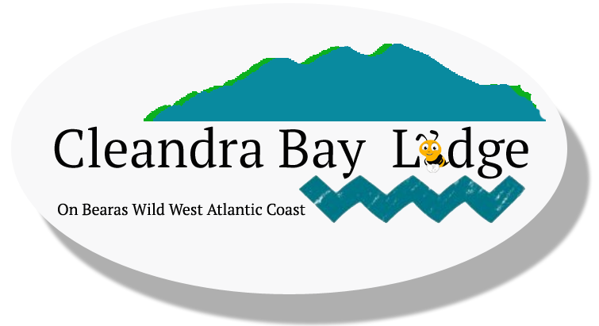

Cleandra Bay Lodge
Home
About
Review
Guide

Home
About
Review
Guide
Cleandra Bay Lodge,
Dreenavogig,
Ardgroom Inwards, Ardgroom,
Bantry
Co Cork
P75 XH99
Eire - +353 858 755 227
UK +44 7960 537 485
Email :- stefan@cleandrabay.ie